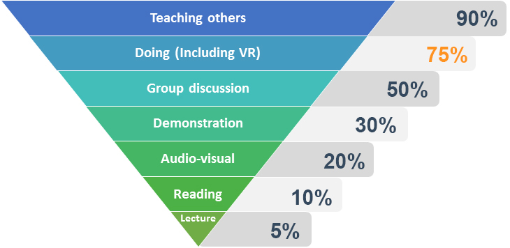
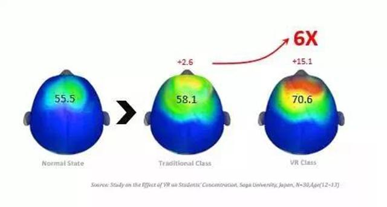
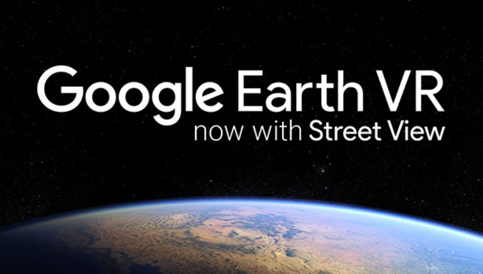
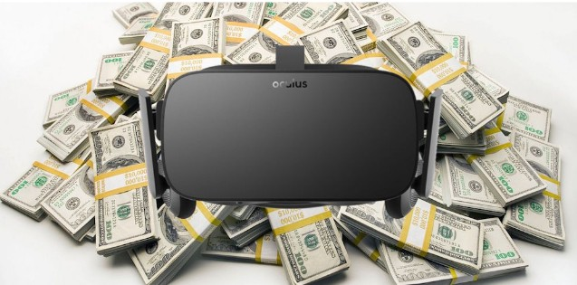
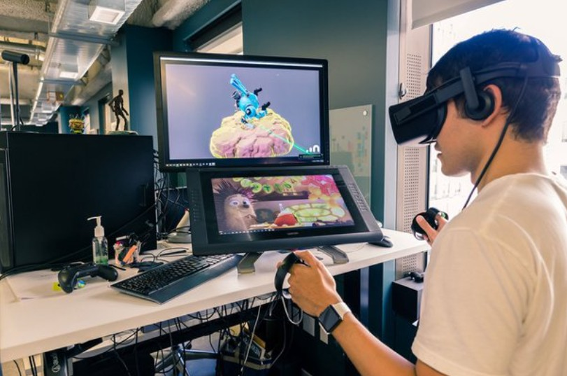
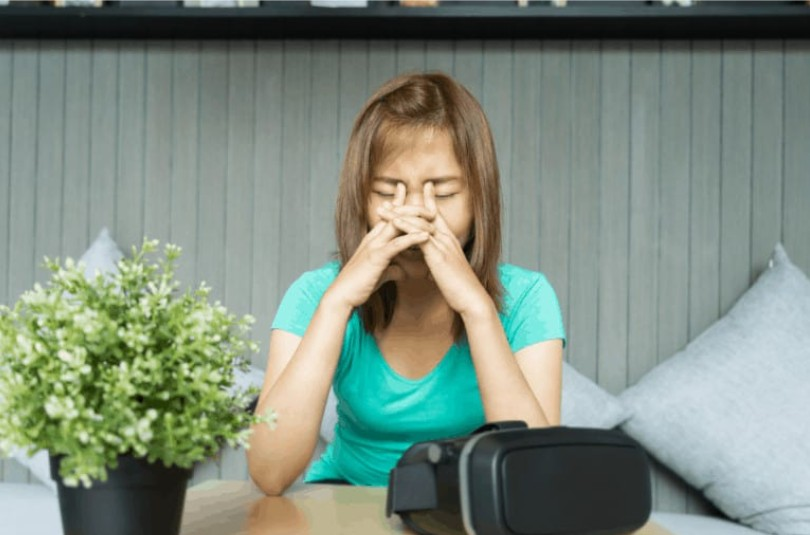

Virtual Reality (VR) is increasingly used in education and here are the advantages of VR.
The learning retention is only 5 percent for lectures and 10 percent for reading, we find VR among the top 2 with a learning retention of 75 percent. VR training is only beaten by learning that happens through educating others, where the learning retention is at 90 percent.(Caroline Witte. 2021) It can be concluded that VR learning is several times more effective than traditional listening and reading.
At the same time, according to the research on "The Impact of Immersive Environment on Students' Concentration" by Saga University in Japan, it was found that VR immersive learning is 6 times more focused than traditional classroom learning.The external factors that attract attention are reduced. Therefore, students can concentrate on learning in VR.
According to a joint study conducted by two Chinese research institutions in 2016, virtual reality (VR) teaching complex astrophysics concepts from a typical Chinese high school textbook significantly improved students' performance. The study involved two groups of students, one teaching using immersive VR and the other teaching using traditional teaching methods. Following the lessons, both groups were given a test to assess their retention of the learning material. The pass rate for the VR group was an impressive 90 percent, while the non-VR group had a pass rate of only 40 percent. These results provide clear evidence that virtual reality positively impacts students' learning retention.
| Teaching Method | Pass Rate |
|---|---|
| Traditional Teaching Methods | 40% |
| Immersive VR | 90% |
VR technology creates an immersive environment that enables students to simulate and experience what will happen in order to practice their knowledge. This higher participation in teaching can lead to an adequate knowledge base. For example, VR simulations can be used to teach science, engineering, and medical procedures.
VR simulations provide students with a safe learning environment without risk of personal injury or other accidents. This is especially valuable in fields such as medicine, where mistakes can have serious consequences.
VR can meet the unique learning needs of individual students. It is more accurate to learn the knowledge you need for the places that you don't understand clearly.
While there are many benefits for applying Virtual reality in education, some challenges we have to consider.
Implementing a Virtual Reality education environment can be expensive and a financial burden for schools to apply it under an insufficient budget. Setting up a Virtual Reality education environment requires VR headsets, additional software or licenses, and computers that can meet the necessary hardware to work with the VR software. Also, the cost of maintaining VR devices and software can be expensive. Regarding equipment, it included repairing and replacing broken hardware and software upgrades. Furthermore, human costs can consist of external training courses for teachers and students and hiring IT staff with specific knowledge of VR technology to provide technical support for the classroom.
Virtual reality can be complicated to set up and maintain; teachers may require specific IT skills and knowledge while applying it to education. To provide practical education to students via VR technology, teachers may need to attend training about using VR hardware and software, such as content creation and applying VR technology to their teaching plan to achieve the learning objective. In addition, there may be technical issues while using VR technology in education. Schools may also need to hire IT staff with specific IT knowledge in VR technology to provide technical support to the classroom.
Content creation is also one of the challenges while applying VR technology in education. Schools and teachers must ensure the VR education content is aligned with the learning objective and standard. In traditional education, the education content changes rapidly according to continuous evaluation of learning outcomes. Schools also have to make sure that the VR education content can follow the changes according to the evaluation since the lead time of VR content development may be longer than traditional education methods due to multiple factors to be considered, such as user experience, design and motion sickness prevention to ensure that the VR education content is appropriate for students.
There are also side effects to using VR technology in education. Motion sickness and eye strain are common health issues when using VR devices. The visuals and movements can disrupt students' sense of balance and spatial awareness, which cause students to have feelings of nausea, dizziness, headache, and loss of balance. In addition, frequent use of VR devices may cause eye health problems such as blurred vision and eye pain, especially for students who are still in the period of maldevelopment.